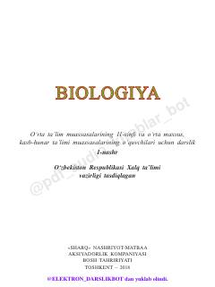

1B11-sinf o‘quvchilari uchun mo‘ljallangan biologiya fanidan o‘quv darsligi.
Ushbu darslik umumiy o‘rta ta’lim maktablarining 11-sinf o‘quvchilari uchun mo‘ljallangan bo‘lib, hayotning biogeotsenotik va biosfera darajasidagi umumbiologik qonuniyatlarni o‘z ichiga oladi. Kitobda ekologiya, tirik organizmlarning tuzilish darajalari va organik olam filogenezi kabi mavzular ilmiy asosda yoritilgan.